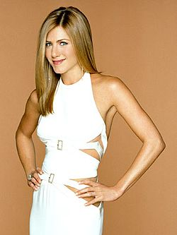
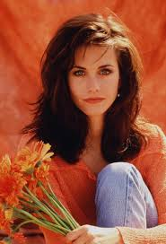
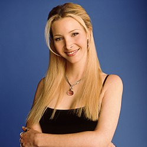
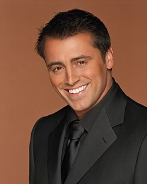
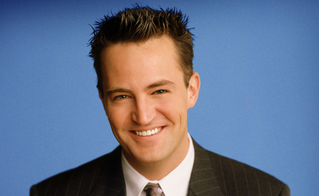
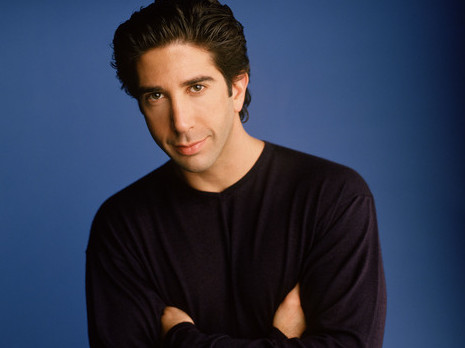

Friends is an American television sitcom, created by David Crane and Marta Kauffman, which aired on NBC from September 22, 1994, to May 6, 2004, lasting ten seasons.
With an ensemble cast starring Jennifer Aniston, Courteney Cox, Lisa Kudrow, Matt LeBlanc, Matthew Perry and David Schwimmer, the show revolves around six friends in their 20s and 30s who live in Manhattan, New York City.
The series was produced by Bright/Kauffman/Crane Productions, in association with Warner Bros. Television.
The original executive producers were Kevin S. Bright, Kauffman, and Crane.

Jennifer Aniston as Rachel Green:
A fashion enthusiast and Monica Geller's best friend from childhood.
Rachel first moves in with Monica in season one after nearly marrying Barry Farber.
Rachel and Ross Geller are later involved in an on-again-off-again relationship throughout the series.
Rachel dates other men during the series, such as an Italian neighbour, Paolo, in season one; Joshua Bergin, a client from Bloomingdale's, in season four; Tag Jones, her assistant, in season seven; and Joey Tribbiani in season ten.
Rachel's first job is as a waitress at the coffee house Central Perk, but she later becomes an assistant buyer at Bloomingdale's in season three, and a buyer at Ralph Lauren in season five.
Rachel and Ross have a daughter named Emma in "The One Where Rachel Has a Baby, Part Two" at the end of season eight.
In the final episode of the series, Ross and Rachel confess their love for each other, and Rachel gives up a job in Paris to be with him.

Courteney Cox as Monica Geller:
The mother hen of the group and a chef, known for her perfectionist, bossy, competitive, and obsessive-compulsive nature.
Monica was overweight as a child.
She works as a chef in various restaurants throughout the show.
Monica's first serious relationship is with long-time family friend Richard Burke, who is twenty-one years her senior.
The couple maintains a strong relationship for some time until Richard expresses that he does not want to have children.
Monica and Chandler Bing later start a relationship after spending a night with each other in London in the season four finale, leading to their marriage in season seven and adoption of twins at the end of the series.

Lisa Kudrow as Phoebe Buffay:
A masseuse and self-taught musician.
As a child, Phoebe lived in upstate New York with her mother, until she committed suicide and Phoebe took to the streets.
She writes and sings her own quirky songs, accompanying herself on the guitar. She has an identical twin named Ursula, who shares Phoebe's quirkiness.
Phoebe has three serious relationships over the show's run: David, a scientist, in season one, whom she breaks up with when he moves to Minsk on a research grant; Gary, a police officer whose badge she finds, in season five; and an on-and-off relationship with Mike Hannigan in seasons nine and ten.
In season nine, Phoebe and Mike break up due to his desire not to marry.
David returns from Minsk, leading to the two getting back together, but she eventually rejects him for Mike when both of them propose to her.
Phoebe and Mike marry in season ten.

Matt LeBlanc as Joey Tribbiani:
A struggling actor and food lover who becomes famous for his role on soap opera Days of Our Lives as Dr. Drake Ramoray.
Joey has many short-term girlfriends.
Despite his womanizing, Joey is innocent, caring, and well-intentioned.
Joey often uses the catchphrase pick-up line "How you doin'?" in his attempts to win over most of the women he meets.
Joey rooms with his best friend Chandler for years, and later with Rachel.
He falls in love with Rachel in season eight, but Rachel politely tells Joey that she does not share his feelings.
They eventually date briefly in season ten, but after realizing it will not work due to their friendship and Rachel's complicated relationship with Ross, they return to being friends.

Matthew Perry as Chandler Bing:
An executive in statistical analysis and data reconfiguration for a large, multinational corporation.
Chandler hates this job, although it pays well. He attempts to quit during season one, but is lured back with a new office and a pay raise.
He eventually quits this job in season nine due to a transfer to Tulsa.
He becomes a junior copywriter at an advertising agency later that season. Chandler has a peculiar family history being the son of an erotic novelist mother and a gay, cross-dressing Las Vegas star father.
Chandler is known for his sarcastic sense of humor and bad luck in relationships.
Chandler marries Monica in season seven, and they adopt twins at the end of the series.
Before his relationship with Monica, Chandler dated Janice Hosenstein in season one and subsequently broke up with her many times.

David Schwimmer as Ross Geller:
Monica Geller's older brother, a palaeontologist working at the Museum of Natural History, and later a tenured professor of palaeontology at the New York University.
Ross is involved in an on-again, off-again relationship with Rachel throughout the series.
He has three failed marriages during the series: Carol Willick, a lesbian who is also the mother of his son, Ben Geller; Emily Waltham, who divorces him after he accidentally says Rachel's name instead of hers during their wedding vows; and Rachel, as the two drunkenly marry in Las Vegas.
His divorces become a running joke within the series.
Following a one-night stand, he and Rachel have a daughter, Emma, by the end of season eight.
They finally confess that they are still in love with each other in the series finale.
My Photos
"OH MY GOD!!!"
My Playlist
"We were on a break!!!"
Give me a like
"I'm Fiine!"
QR Code
"Something is wrong with the left phalange!"
Q&A
"But they don't know that we know they know we know!"
Q1
The diffrence between web1 web2 & web3 are:
web1 - The readable version of internet where we used to get information.
web2 - The information came from the users.
web3 - The information a user see based on is own perferences.
or as you can see in details on this website: (I rather not copy from the net because it is kind of stealing)
Q2
When using web1 to find "Side effects of drugs" the user gets a list of websites containing text about "Side effects of drugs" in general probably not very accurate.
When using web2 to find "Side effects of drugs" the user gets a list of websites that contain knowledge shared by many people,
which makes the internet widely rich with data.
When using web3 the search engine knows what drug you're using and shows you the most relavant websites to you,
fitting the information espically to you by AI algorithms, gather data togther and display it to you.
if you will search the same query via other user the answer will definitely be different.